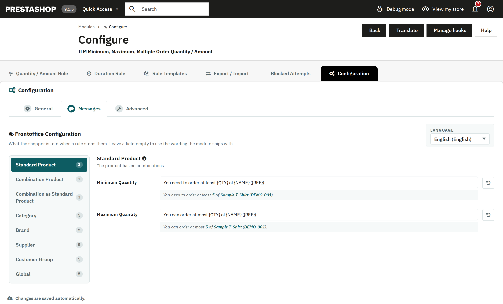

What the shopper is told when a rule stops them. Every message is editable per scope (Standard Product, Combination Product, Category, Brand, Supplier, Customer Group, Global) and per language, with a live preview using sample values right below each field. Leave a field empty to use the wording the module ships with, or use the restore button next to a field to bring it back. Besides the minimum, maximum and multiple messages, there are messages for amounts, Allowed Quantities and different products per order. The wording of the product page information and of the cart page's checkout note is set on the Advanced tab, next to their switches. The shipped wording is available in English, French, German, Italian, Polish, Spanish and Dutch.

Placeholders such as {QTY}, {NAME} and {REF} are substituted with the real product's values when a customer is actually blocked.